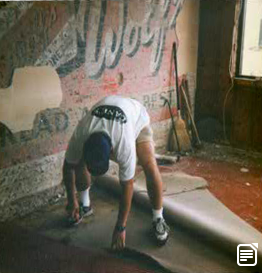

Raising Cane's Chicken Fingers was founded in Baton Rouge, Louisiana by Todd Graves on August 26, 1992.
As a Louisiana State University student, Todd received the worst grade in the class for his business proposition. The professor said a chicken finger restaurant would never work, and the banks thought so, too. He worked 90-hour weeks at the L.A. refinery as a boilermaker to begin raising his own money.
Graves then ventured to The Last Frontier, Alaska, to continue raising funds as he became a fisherman. There he worked 20-hour days in some of the most dangerous conditions fishing commercially for Sockeye Salmon. Today, the Sockeye Salmon is one of the most iconic staples of Raising Cane's workplace culture as it conveys the endless rewards of a good work ethic.
When Todd returned to Louisiana with the money he earned, he was able to acquire a SBA loan leaving him with just enough funds to start his first restaurant. Todd found an old building at the gates of LSU and began to renovate. It was during the renovation when he found the inspiration for the Raising Cane's logo.
